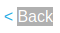

JQuery attr() method
jQuery is a JavaScript Library. Its main purpose is to help developers to handle the DOM with JavaScript
JQuery attr() method: https://www.w3schools.com/jquery/html_attr.asp
The attr() method sets or returns attributes and values of the selected elements.

Example 1:
attr() method is called with value from location.search. location.search returns the querystring part of a URL, in this particular case we are asking for the value of the returnPath parameter
In our scenario returnPath is used to set the attribute href at the value (new URLSearchParams(window.location.search)).get('returnPath') for the element backLink
1. Inspect the source of the page, we can see that it have the following javascript code
$('#backLink').attr("href", (new URLSearchParams(window.location.search)).get('returnPath'));
2. Test retunPath with an alphanumeric value
3. Payload: javascript:alert(1)
As we see from the code the payload will be triggered only when the backLink element will be activate in this case by pressing “Back” we can know that by inspecting the element
